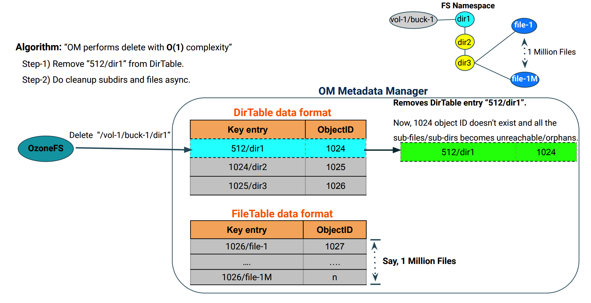

Prefix based FileSystem Optimization
The prefix based FileSystem optimization feature supports atomic rename and delete of any directory at any level in the namespace. Also, it will perform rename and delete of any directory in a deterministic/constant time.
Note: This feature works only when ozone.om.enable.filesystem.paths is
enabled which means that Hadoop Compatible File System compatibility is
favored instead of S3 compatibility. Some irregular S3 key names may be
rejected or normalized.
This feature is strongly recommended to be turned ON when Ozone buckets are mainly used via Hadoop compatible interfaces, especially with high number of files in deep directory hierarchy.
OzoneManager Metadata layout format
OzoneManager supports two metadata layout formats - simple and prefix.
Simple is the existing OM metadata format, which stores key entry with full path
name. In Prefix based optimization, OM metadata format stores intermediate
directories into DirectoryTable and files into FileTable as shown in the
below picture. The key to the table is the name of a directory or a file
prefixed by the unique identifier of its parent directory, <parent unique-id>/<filename>.

Directory delete operation with prefix layout:
Following picture describes the OM metadata changes while performing a delete operation on a directory. 
Directory rename operation with prefix layout:
Following picture describes the OM metadata changes while performing a rename
operation on a directory.

Configuration
By default the feature is disabled. It can be enabled with the following
settings in ozone-site.xml:
<property>
<name>ozone.om.enable.filesystem.paths</name>
<value>true</value>
</property>
<property>
<name>ozone.om.metadata.layout</name>
<value>PREFIX</value>
</property>